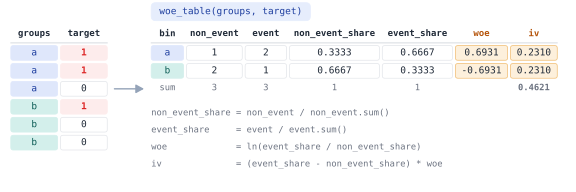
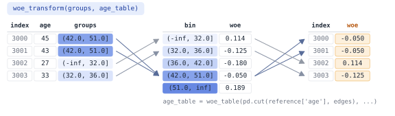

证据权重与信息值#
woe_table() 衡量每组对二分类目标的区分能力。标签 1 表示事件，0 表示非事件。数据须同时包含两类标签。分组与标签序列的索引必须相同；数组和列表按位置对应， 约定 说明了所有函数共同遵守的这一规则。
WOE 和 IV 位于 分箱 之后（后者形成分组），位于 变量筛选 之前（后者在 WOE 编码的变量上拟合逻辑回归）。 woe_transform() 用拟合的 WOE 对新数据编码， woe() 和 iv() 根据已经汇总的计数计算这些指标， woe_trend() 给出数值变量各箱 WOE 的趋势形状。
定义#
对第 \(i\) 组，令 \(E_i\) 和 \(N_i\) 分别为其事件数和非事件数。它在全部事件和全部非事件中的占比为
该组的证据权重和信息值贡献为
WOE 为正表示该组在事件中相对更常见。每组的 IV 贡献都大于或等于零，因为 \(p_i - q_i\) 与 \(\ln(p_i / q_i)\) 的符号始终相同。
计算示例#
组 a 中三分之二是事件，组 b 中三分之二是非事件，因此两组的 WOE 互为相反数，等于 \(\pm\ln 2\)。
>>> import pandas as pd
>>> from kivi.woe import woe_table
>>> groups = pd.Series(["a", "a", "a", "b", "b", "b"])
>>> target = pd.Series([1, 1, 0, 1, 0, 0])
>>> result = woe_table(groups, target)
前几列描述每组本身：计数、占全部观测的比例和事件率。
>>> result[["non_event", "event", "total", "total_share", "event_rate"]].round(4)
non_event event total total_share event_rate
bin
a 1 2 3 0.5 0.6667
b 2 1 3 0.5 0.3333
其余各列比较两个类别：
>>> result[["non_event_share", "event_share", "woe", "iv"]].round(4)
non_event_share event_share woe iv
bin
a 0.3333 0.6667 0.6931 0.231
b 0.6667 0.3333 -0.6931 0.231
>>> print(f"{result['iv'].sum():.4f}")
0.4621

woe_table 如何计算该示例：统计每组的非事件数和事件数，用每个计数除以所在列的合计，取两个占比之比的对数作为 WOE，再用 WOE 乘以两个占比之差得到 IV。#
如果计数已经汇总（例如来自数据库查询），可以把每组的事件数和非事件数传给 woe() 和 iv() ，得到相同的结果：
>>> from kivi.woe import iv, woe
>>> woe([2, 1], [1, 2]).round(4)
array([ 0.6931, -0.6931])
>>> round(iv([2, 1], [1, 2]), 4)
0.4621
空单元格的平滑#
没有事件或没有非事件的组，其 WOE 会是无穷。计算占比前，每个零计数都会被替换为 smoothing 参数值 \(s\)：
非事件同理。平滑默认用 0.5 替换零频数，再按列分别归一化。结果表中的计数始终是实际观测数。
>>> groups = pd.Series(["a", "a", "b", "b", "c"])
>>> target = pd.Series([1, 0, 0, 0, 1])
>>> columns = ["non_event", "event", "non_event_share", "event_share", "woe", "iv"]
>>> woe_table(groups, target)[columns].round(3)
non_event event non_event_share event_share woe iv
bin
a 1 1 0.286 0.4 0.336 0.038
b 2 0 0.571 0.2 -1.050 0.390
c 0 1 0.143 0.4 1.030 0.265
警告
修改平滑参数可能显著改变稀疏分箱的结果。在依赖这些箱的 WOE 之前，请合并小箱，或比较多个平滑取值的结果。
解读结果#
列 |
含义 |
|---|---|
|
每组的实际观测数。 |
|
平滑后的 \(q_i\) 和 \(p_i\)；每列之和为 1。 |
|
该组占全部观测的比例，不做平滑。 |
|
该组事件数除以该组总数，不做平滑。当目标为违约时，即为坏账率。 |
|
\(\ln(p_i / q_i)\). |
|
该组的 IV 贡献。对该列求和得到变量的 IV。 |
解读总值前先检查每一箱的贡献。只有少量事件的箱也可能有很大的 WOE，但它代表的客户可能很少。
备注
一种广泛使用的经验口径是：IV 低于 0.02 视为无预测力，0.02 到 0.1 为弱，0.1 到 0.3 为中等，高于 0.3 为强。这些区间只是参考起点，而非检验标准；IV 过高往往意味着目标信息泄漏到了该变量中。
绘制 WOE 图#
WOE 图是与业务方一起评审变量的常用方式：上图为每组的客户占比和事件率，下图为 WOE。类别变量按 WOE 排序后最易阅读。
>>> from kivi.datasets import load_bank
>>> data = load_bank()
>>> reference = data.iloc[:3000]
>>> jobs = woe_table(reference["job"], reference["target"]).sort_values("woe")
>>> jobs[["event", "non_event", "event_rate", "woe"]].round(3).iloc[[0, 1, -2, -1]]
event non_event event_rate woe
bin
blue-collar 43 576 0.069 -0.564
services 23 246 0.086 -0.339
retired 29 121 0.193 0.602
student 15 44 0.254 0.955

按职业的 WOE。学生和退休客户的认购率远高于蓝领工人，但学生只占样本的 2%，其 WOE 依赖的客户很少。#
绘图代码
本文档用下面这个 matplotlib 函数绘制 WOE 图，它接收 woe_table() 的结果。
def woe_rate_panels(table: pd.DataFrame, title: str = ""):
"""Population share and event rate per bin (top) and WOE per bin (bottom)."""
share, event_rate = table["total_share"], table["event_rate"]
x = np.arange(len(table))
fig, (top, bottom) = plt.subplots(
2, 1, figsize=(8, 5), sharex=True, gridspec_kw={"height_ratios": [1, 1.1]}
)
top.bar(x, share, color=LIGHT_BLUE, width=0.6, label="total_share")
top.yaxis.set_major_formatter(PercentFormatter(1, decimals=0))
top.set_ylabel("total_share")
rate = top.twinx()
rate.plot(x, event_rate, color=AMBER, marker="o", linewidth=2, label="event_rate")
rate.yaxis.set_major_formatter(PercentFormatter(1, decimals=0))
rate.set_ylim(0, max(event_rate.max() * 1.25, 0.01))
rate.set_ylabel("event_rate")
rate.grid(False)
rate.spines["right"].set_visible(True)
handles = top.get_legend_handles_labels()[0] + rate.get_legend_handles_labels()[0]
top.legend(
handles,
["total_share", "event_rate"],
loc="lower right",
bbox_to_anchor=(1, 1.01),
ncols=2,
borderaxespad=0,
)
if title:
top.set_title(title)
colors = [BLUE if value >= 0 else TEAL for value in table["woe"]]
bottom.bar(x, table["woe"], color=colors, width=0.6)
bottom.axhline(0, color=GRAY, linewidth=1)
_bar_values(bottom, x, table["woe"])
bottom.set_ylabel("woe")
_ticks(bottom, x, _labels(table.index))
fig.tight_layout()
return fig
要同时比较多个变量，可以按 IV 排序，见 风控建模流程。
WOE 的趋势#
数值变量的 WOE 随变量平稳上升或下降时最容易解释。 woe_trend() 按表的行顺序读取标签为区间的各行的 woe 列，给出分箱的趋势形状： "increasing" 、 "decreasing" 、 "u_shaped" （先降后升）、 "inverted_u" （先升后降）、 "irregular" （方向变化不止一次）或 "flat" 。在银行数据上，五个等频箱给出四种形状：
>>> from kivi.binning import bin_edges
>>> from kivi.woe import woe_trend
>>> trends = {}
>>> for column in ["age", "balance", "day", "duration"]:
... values = reference[column]
... table = woe_table(pd.cut(values, bin_edges(values, bins=5)), reference["target"])
... trends[column] = woe_trend(table)
>>> trends
{'age': 'u_shaped', 'balance': 'increasing', 'day': 'irregular', 'duration': 'increasing'}
特殊值和缺失值的行在变量的刻度上没有位置，因此不参与判断。 pdays 的特殊值 -1 表示此前没有联系过的客户，它排在表的第一行，趋势读取其后的五个区间：
>>> from kivi.binning import cut
>>> pdays = reference["pdays"]
>>> edges = bin_edges(pdays, bins=5, special=[-1])
>>> pdays_table = woe_table(cut(pdays, edges, special=[-1]), reference["target"])
>>> pdays_table["woe"].round(3)
bin
-1 -0.257
(-inf, 105.0] 1.880
(105.0, 175.6] 0.326
(175.6, 255.4] 1.161
(255.4, 342.2] -0.336
(342.2, inf] 0.239
Name: woe, dtype: float64
>>> woe_trend(pdays_table)
'irregular'
不规则的趋势常常是小箱中的噪声。 monotonic_edges() 合并相邻的箱，直到 WOE 逐箱上升或下降，见 分箱 ：
>>> from kivi.binning import monotonic_edges
>>> edges = monotonic_edges(pdays, reference["target"], special=[-1])
>>> woe_trend(woe_table(cut(pdays, edges, special=[-1]), reference["target"]))
'decreasing'
WOE 在相对 1e-10 以内相等的相邻箱既不算上升也不算下降，因此不会打断趋势。U 形也可能是真实的，例如年龄：最年轻和最年长的客户认购更多；应与业务方一起审视，而不是强行把它变成单调。趋势取决于表的行顺序，因此请在排序（例如为绘图按 WOE 排序）之前读取。类别变量没有区间，也没有顺序，因此 woe_trend() 对它的表会抛出 ValueError 。
对新数据编码#
评分卡模型以 WOE 值作为输入。 woe_transform() 用开发样本表中的 WOE 替换每个分组，因此验证样本和之后的生产数据都会使用完全相同的编码。请用在开发样本上拟合的边界为每个样本分组：
>>> from kivi.binning import bin_edges
>>> from kivi.woe import woe_transform
>>> edges = bin_edges(reference["age"], bins=5)
>>> age_table = woe_table(pd.cut(reference["age"], edges), reference["target"])
>>> current = data.iloc[3000:]
>>> encoded = woe_transform(pd.cut(current["age"], edges), age_table)
>>> pd.DataFrame({"age": current["age"], "woe": encoded}).head(4).round(3)
age woe
3000 45 -0.050
3001 43 -0.050
3002 27 0.114
3003 33 -0.125

woe_transform 在开发样本的表中查找每一行所在的组，返回其 WOE，并保留各行的索引。#
结果保留分组的索引。如果开发样本中有缺失值，缺失值会取缺失组的 WOE。
不在表中的分组（例如只在后来的数据中出现的类别）默认会引发错误，因此映射问题不会被忽略：
>>> new_jobs = pd.Series(["student", "gig worker", None])
>>> woe_transform(new_jobs, jobs)
Traceback (most recent call last):
...
ValueError: 2 group(s) are not in table, such as 'gig worker', nan; pass unseen to give them a WOE
也可以传入 unseen 为这类分组指定 WOE。WOE 为 0 是中性的选择：它代表整个开发样本的事件率。
>>> woe_transform(new_jobs, jobs, unseen=0.0).round(3).tolist()
[0.955, 0.0, 0.0]
有监督分箱后的信息值#
在拟合分箱所用的样本上算出的信息值，会高估变量在其他样本上的信息值。即使分箱事先固定，一个与目标无关的变量也有正的 IV。设 \(n\) 个观测中有 \(n_e\) 个事件和 \(n_n\) 个非事件，分为 \(k\) 个箱，则
因此这种变量的 IV 平均为 \((k - 1)\,n / (n_e n_n)\) 。基准样本的 3,000 个客户中有 348 个认购客户，5 个箱时为 0.013，20 个箱时为 0.062：
>>> events, rows = int(reference["target"].sum()), len(reference)
>>> [round((bins - 1) * rows / (events * (rows - events)), 3) for bins in (5, 20)]
[0.013, 0.062]
这一近似适用于不借助目标变量固定的分箱，例如 profile_table() 的等频箱，其 chi2_p_value 正是这样检验 IV 的。 分箱 中的有监督方法会选择能区分样本中两类的边界，因此噪声的 IV 还要更大。打乱目标变量会切断变量与目标之间的一切联系。把目标变量打乱 100 次、每次都重新拟合 5 个 tree_edges() 箱后， day 的 IV 平均仍有 0.037，接近 5 个固定箱时 0.013 的三倍，并且在大多数打乱中都超过常用的 0.02 门槛：
>>> import numpy as np
>>> from kivi.binning import tree_edges
>>> def tree_iv(values, target):
... groups = pd.cut(values, tree_edges(values, target))
... return woe_table(groups, target)["iv"].sum()
>>> target = reference["target"]
>>> rng = np.random.default_rng(0)
>>> shuffled = np.array([
... tree_iv(reference["day"], pd.Series(rng.permutation(target.to_numpy()), index=target.index))
... for _ in range(100)
... ])
>>> print(f"mean {shuffled.mean():.3f}, 95% quantile {np.quantile(shuffled, 0.95):.3f}")
mean 0.037, 95% quantile 0.069
>>> print(f"{(shuffled >= 0.02).mean():.0%} of the shuffles above 0.02")
92% of the shuffles above 0.02
这些打乱就是一次置换检验。用真实目标变量拟合的分箱所得到的 IV，如果很少有打乱后的 IV 能达到，它就是显著的； day 的 IV 在 100 次打乱中一次也没有被达到：
>>> observed = tree_iv(reference["day"], target)
>>> print(f"IV = {observed:.3f}, reached by {int((shuffled >= observed).sum())} of 100 shuffles")
IV = 0.088, reached by 0 of 100 shuffles
每次打乱后都要用该变量的方法和参数重新拟合分箱，因为乐观偏差来自拟合本身：在打乱的目标变量上沿用固定边界，只会显示上面近似式给出的较小偏差。
验证样本上的 IV 不带拟合带来的乐观偏差。在开发样本上拟合分箱（这里用 BinningSpec ），用同样的边界对验证样本分组，再计算其 WOE 表，即 woe_table(spec.cut(validation)[column], validation_target) ：
>>> from kivi.spec import fit_spec
>>> columns = ["age", "balance", "campaign", "day"]
>>> spec = fit_spec(reference[columns], reference["target"], method="tree")
>>> validation = spec.cut(current)
>>> pd.DataFrame({
... "development": {column: spec.tables[column]["iv"].sum() for column in columns},
... "validation": {
... column: woe_table(validation[column], current["target"])["iv"].sum()
... for column in columns
... },
... }).round(3)
development validation
age 0.105 0.272
balance 0.158 0.065
campaign 0.060 0.118
day 0.088 0.042
在验证样本上边界是固定的，因此上面的近似再次成立：之后的 1,521 个客户中有 173 个认购客户，5 个噪声箱的 IV 平均为 0.026。 balance 和 day 保留的 IV 都不到开发样本上的一半，其中 day 已接近这一水平。 age 和 campaign 对之后客户的区分比对基准客户更好，这是客群的变化，可由 群体稳定性指标 衡量。应按这样的 IV 或置换检验来排序和筛选变量，而不是按开发样本上的 IV。
每个箱的 WOE 仍取开发样本上的值。如果对每一行使用不含该行的样本算出的 WOE（折外编码），同一个箱就会有多个 WOE 值，而评分卡给每个箱的只是一个分数。
样本权重#
开发样本常常是分层抽样得到的：保留全部坏账户，但只保留一部分好账户。把每个观测抽样比例的倒数作为 weights 传入，计数就能反映总体。下面的样本保留了全部认购客户和每四个其他客户中的一个，因此每个未认购客户代表四个客户。
>>> import numpy as np
>>> sample = data[(data["target"] == 1) | (np.arange(len(data)) % 4 == 0)]
>>> weights = np.where(sample["target"] == 1, 1.0, 4.0)
>>> columns = ["event_rate", "woe"]
>>> tables = {
... "full": woe_table(data["housing"], data["target"])[columns],
... "sample": woe_table(sample["housing"], sample["target"])[columns],
... "weighted": woe_table(sample["housing"], sample["target"], weights=weights)[columns],
... }
>>> pd.concat(tables, axis=1).round(3)
full sample weighted
event_rate woe event_rate woe event_rate woe
bin
no 0.153 0.330 0.431 0.365 0.159 0.365
yes 0.086 -0.326 0.270 -0.349 0.085 -0.349
不加权的样本高估了事件率，加权后事件率回到总体水平。WOE 不变，因为它比较的是事件与非事件各自内部的占比，而同一目标类别的权重会使其所有计数按相同比例缩放。前提是没有任何组在某一目标类别中为空： smoothing 以权重为单位替换空单元格，因此当权重总和不等于观测数时，请按相同比例缩放 smoothing 。加权结果中的计数为权重之和，权重之和为零的组会被排除， woe_transform() 会把它们视为未见过的分组。